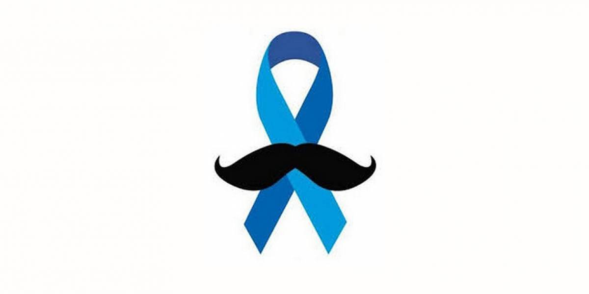

Entendendo o Novembro Azul
"Novembro Azul" é uma campanha de conscientização que acontece mundialmente durante o mês de novembro, com ênfase na prevenção e diagnóstico precoce do câncer de próstata. No Brasil, essa iniciativa busca sensibilizar a população masculina sobre a importância da realização de exames regulares para detectar precocemente esse tipo de câncer, que é o segundo mais comum entre os homens.
O câncer de próstata é uma doença que afeta a glândula masculina conhecida como próstata, que está localizada abaixo da bexiga e à frente do reto. A campanha Novembro Azul destaca a relevância do diagnóstico precoce, pois, quando detectado em estágios iniciais, o câncer de próstata tem maiores chances de tratamento bem-sucedido.
Durante o Novembro Azul, são realizadas diversas ações, como palestras, eventos e campanhas publicitárias, visando incentivar os homens a realizarem exames preventivos, principalmente o exame de toque retal e o exame de sangue PSA (Antígeno Prostático Específico).
Além da conscientização sobre o câncer de próstata, o Novembro Azul também aborda a importância da saúde masculina de maneira mais abrangente, estimulando os homens a adotarem hábitos saudáveis e a realizarem check-ups regulares para prevenir diversas condições médicas.
Essa campanha é uma oportunidade para quebrar tabus e desconstruir preconceitos relacionados à saúde masculina, incentivando os homens a cuidarem melhor de si mesmos e a buscarem orientação médica quando necessário.

A importância dos exames preventivos
A importância dos exames preventivos, especialmente no contexto da campanha Novembro Azul, não pode ser subestimada. O Novembro Azul é uma iniciativa vital que visa conscientizar os homens sobre a necessidade de cuidar da saúde, com foco especial na prevenção do câncer de próstata.
Os exames preventivos são ferramentas essenciais na detecção precoce de condições de saúde, permitindo intervenções rápidas e eficazes. No âmbito do Novembro Azul, isso se traduz em destacar a importância de dois exames-chave: o exame de toque retal e o exame de sangue PSA.
O exame de toque retal, muitas vezes cercado por tabus e receios, é uma avaliação direta da saúde da próstata, permitindo a identificação de alterações que podem indicar a presença de anomalias. Juntamente com o exame de sangue PSA, que mede os níveis do Antígeno Prostático Específico, esses testes fornecem uma visão abrangente da saúde prostática.
A detecção precoce do câncer de próstata é crucial para aumentar as chances de tratamento bem-sucedido. O Novembro Azul serve como um lembrete urgente para os homens priorizarem sua saúde e superarem quaisquer hesitações em relação aos exames preventivos.
Além do câncer de próstata, o Novembro Azul também destaca a importância de adotar um estilo de vida saudável, envolvendo práticas como uma dieta equilibrada, atividade física regular e a busca regular por orientação médica. Esses hábitos preventivos contribuem não apenas para a saúde da próstata, mas também para o bem-estar geral.
Em resumo, os exames preventivos são as ferramentas que capacitam os homens a tomar controle de sua saúde. O Novembro Azul é mais do que uma campanha; é um lembrete poderoso de que cuidar de si mesmo é um ato de coragem e responsabilidade. Ao priorizar os exames preventivos, os homens não apenas investem em sua própria qualidade de vida, mas também promovem uma cultura de conscientização e prevenção que beneficia a sociedade como um todo.